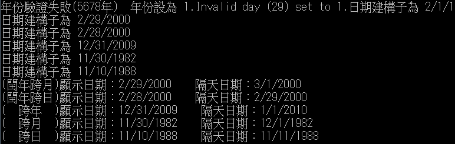
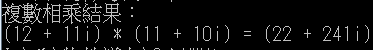

public class Date{
private int month; // 1-12
private int day; // 1-31 based on month
private int year; // any year
public Date( int theMonth, int theDay, int theYear ){
month = checkMonth( theMonth ); // validate month
year = checkYear( theYear ); // could validate year
day = checkDay( theDay ); // validate day
System.out.printf(
"日期建構子為 %s\n", this );}
private int checkYear( int testYear ){ // 檢查年份
if ( testYear >= 0 && testYear <= 2010 ) // validate Year
return testYear;
else {
System.out.printf(
"年份驗證失敗(%d年) 年份設為 1.", testYear );
return 1; // maintain object in consistent state}
}
private int checkMonth( int testMonth ){ //檢查月份
if ( testMonth > 0 && testMonth <= 12 )
return testMonth;
else // month is invalid{
System.out.printf(
"月份驗證失敗(%d月) 月份設為 1.", testMonth );
return 1; // maintain object in consistent state }
}
private int checkDay( int testDay ){
int daysPerMonth[] =
{ 0, 31, 28, 31, 30, 31, 30, 31, 31, 30, 31, 30, 31 };
// 檢查對應月份的日期
if ( testDay > 0 && testDay <= daysPerMonth[ month ] )
return testDay;
// 檢查閏年
if ( month == 2 && testDay == 29 && ( year % 400 == 0 ||
( year % 4 == 0 && year % 100 != 0 ) ) )
return testDay;
System.out.printf( "Invalid day (%d) set to 1.", testDay );
return 1; // maintain object in consistent state}
// 回傳字串 月/日/年
public String toString(){
return String.format( "%d/%d/%d", month, day, year );}
public String nextday( ){
int daysPerMonth[] =
{ 0, 31, 28, 31, 30, 31, 30, 31, 31, 30, 31, 30, 31 };
if ( month == 12 && day == 31 ){
month = 1;
day = 1;
year += 1;
return String.format( "%d/%d/%d", month, day, year );}
else if ( month == 2 && day == 28 && ( year % 400 == 0 ||
( year % 4 == 0 && year % 100 != 0 ) ) )
{
month = month;
day = 29;
year = year;
return String.format( "%d/%d/%d", month, day, year );}
else if(day >= daysPerMonth[month]){
month += 1;
day = 1;
year = year;
return String.format( "%d/%d/%d", month, day, year );}
else{
month = month;
day += 1;
year = year;
return String.format( "%d/%d/%d", month, day, year );}
}
public static void main( String args[] )
{
Date a = new Date( 2, 29, 5678 );//測試檢查年份錯誤時的情況
Date b = new Date( 2, 29, 2000 );//測試閏年跨月
Date c = new Date( 2, 28, 2000 );//測試閏年的nextday
Date d = new Date( 12, 31, 2009 );//測試跨年
Date e = new Date( 11, 30, 1982 );//測試一般的跨月
Date f = new Date( 11, 10, 1988 );//測試一般的nextday
System.out.println( "(閏年跨月)顯示日期："+ b + " 隔天日期：" + b.nextday() );
System.out.println( "(閏年跨日)顯示日期："+ c + " 隔天日期：" + c.nextday() );
System.out.println( "( 跨年 )顯示日期："+ d + " 隔天日期：" + d.nextday() );
System.out.println( "( 跨月 )顯示日期："+ e + " 隔天日期：" + e.nextday() );
System.out.println( "( 跨日 )顯示日期："+ f + " 隔天日期：" + f.nextday() );}
}

class HW4_2{
private int R;//實數
private int i;//複數
public HW4_2(){
this(0,0);}
public HW4_2(int x , int y){
this.R = x;
this.i = y;}
void multiply(HW4_2 p){
int countR = p.R*R - p.i*i;
int counti = p.R*i + p.i*R;
System.out.printf("(%d + %di) * (%d + %di) = (%d + %di)",R,i,p.R,p.i,countR,counti);}
public static void main(String args[]){
HW4_2 a = new HW4_2(12,11);
HW4_2 b = new HW4_2(11,10);
System.out.println( "複數相乘結果：" );
a.multiply(b);}
}